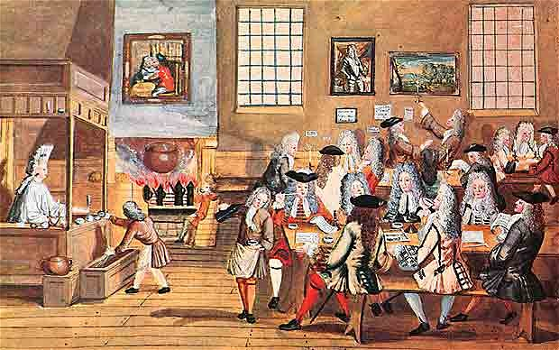

Historia del café
La historia de cómo se extendió por todo el mundo el cultivo y el consumo de café es una de las más atractivas y románticas que pueda haber. Esa historia empieza en el Cuerno de África, en Etiopía, donde el cafeto tuvo su origen probablemente en la provincia de Kaffa. Hay varios relatos, imaginativos pero poco probables, acerca de cómo se descubrieron los atributos del grano tostado de café. Cuenta uno de ellos que a un pastor de cabras etíope le asombró el animado comportamiento que tenían las cabras después de haber mascado cerezas rojas de café. Lo que se sabe con más certeza es que los esclavos a los que se llevaba de lo que es hoy el Sudán a Yemen y Arabia a través del gran puerto de aquel entonces, Moca, sinónimo ahora con el café, comían la suculenta parte carnosa de la cereza del café. De lo que no cabe duda es de que el café se cultivaba en Yemen ya en el siglo XV y es probable que mucho antes también. Moca era también el puerto principal de la única ruta marítima a la Meca, el lugar más concurrido del mundo en aquella época. Los árabes, sin embargo, tenían una rigurosa política de no exportar granos fértiles de café, para que no se pudiese cultivar en ningún otro lugar. El grano de café es la semilla del cafeto, pero cuando se le quitan las capas exteriores se vuelve infértil. Muchos fueron los intentos que se hicieron para lograr llevarse algunos cafetos o granos fértiles, pero esa carrera la ganaron por fin los holandeses en 1616, que consiguieron llevarse algunos a Holanda y allí los cultivaron en invernaderos. Al principio, las autoridades deYemen alentaron mucho el consumo de café, ya que sus efectos se consideraban preferibles a los más fuertes del “Kat”, un arbusto cuyas hojas y brotes se masticaban como estimulante. Los primeros establecimientos de servir café se abrieron en la Meca y se llamaban “kaveh kanes”. Ese tipo de establecimiento se extendió rápidamente por todo el mundo árabe y los cafés se convirtieron en lugares muy concurridos en los que se jugaba al ajedrez, se intercambiaban chismes y se disfrutaba del canto, el baile y la música. Los establecimientos estaban decorados con lujo y cada uno de ellos tenía su propio carácter. Nada había habido antes como el establecimiento de café: un lugar en el que se podía hacer vida de sociedad y negocios en un ambiente cómodo y al que todo el mundo podía ir por el precio de un café. Los establecimientos de café árabes pronto se convirtieron en centros de actividad política y fueron suprimidos. Después, en las siguientes décadas, el café y los establecimientos de café fueron prohibidos varias veces, pero siguieron reapareciendo. Con el tiempo se encontró una solución: el café y los establecimientos de café tuvieron que pagar impuestos.
EL CAFÉ LLEGA A ASIA
Los holandeses empezaron también a cultivar café en Malabar, en la India, y en 1699 llevaron alguno a Batavia, en Java, en lo que es ahora Indonesia. Unos cuantos años después, las colonias holandesas se habían convertido en la principal fuente de suministro de café a Europa. Hoy en día Indonesia es el cuarto exportador de café del mundo.
EL CAFÉ LLEGA A EUROPA
 Los comerciantes venecianos fueron los que primero llevaron el café a Europa en 1615. Esa fue la época en que también aparecieron en Europa las otras dos grandes bebidas calientes: la primera, el chocolate caliente, que llevaron los españoles de las Américas a España en 1528; la otra el té, que se vendió por primera vez en Europa en 1610. Al principio el café lo vendían sobre todo los vendedores de limonada y se creía que tenía cualidades medicinales. El primer establecimiento de café en Europa se abrió en Venecia en 1683, y fue el famosísimo Caffè Florian de la Plaza de San Marcos, que abrió sus puertas en 1720 y sigue aún hoy abierto al público. El mayor mercado de seguros del mundo, Lloyds de Londres, empezó a funcionar como un establecimiento de café. Empezó el negocio en 1688 Edward Lloyd, que preparaba allí las listas de los buques que sus clientes habían asegurado.
EL CAFÉ LLEGA A LAS AMÉRICAS
La primera referencia de que se tomaba café en Norteamérica data de 1668 y, pronto después de esa fecha se abrieron establecimientos de café en Nueva York, Filadelfia, Boston y algunas otras ciudades. El Boston Tea Party de1773 se planeó en un establecimiento de café, el Green Dragon. Tanto la Bolsa de Nueva York como el Banco de Nueva York empezaron en establecimientos de café, en lo que es hoy el distrito financiero de Wall Street. Fue en 1720 cuando el café se empezó a cultivar por primera vez en las Américas, gracias a lo que es quizá el relato más fascinante y romántico de la historia del café. Gabriel Mathieu de Clieu era un oficial de la Marina francesa que estaba de servicio en la Martinica y que, en 1720, viajó a París con permiso. Con alguna ayuda y no poco encanto personal adquirió un cafeto que se llevó con él en el viaje de vuelta. El cafeto fue instalado en una caja de cristal y dejado en cubierta para mantenerlo caliente y que no lo dañase el agua salada. El viaje estuvo lleno de incidentes, o al menos así fue como lo contó Mathieu de Clieu en su diario: piratas tunecinos persiguieron el buque, hubo una fuerte tormenta y el cafeto tuvo que ser amarrado. Nuestro héroe se vio obligado a enfrentarse con un enemigo a bordo que tenía envidia y trató de robar(¿?) el arbusto, hubo una pelea violenta en la que una de sus ramas se quebró, pero el cafeto sobrevivió a todo ello. Después de esos incidentes el buque quedó inmóvil por falta de viento y se racionó el agua potable. Para De Clieu estaba claro qué era lo más importante de todo y cedió la mayor parte del agua que le correspondía al cafeto. El cafeto sobrevivió y él también. Por último, el buque llegó a la Martinica y el cafeto fue replantado en Preebear, donde lo cercaron con un seto de espinas y lo cuidaron esclavos. El cafeto creció, se multiplicó, y en 1726 se hizo la primera cosecha. Está registrado que en 1777 había entre 18 y 19 millones de cafetos en la Martinica. Había quedado establecido el modelo para un nuevo cultivo comercial que podía darse en el Nuevo Mundo. Fueron los holandeses, sin embargo, los que primero empezaron a propagar el cafeto en América Central y del Sur, donde hoy en día reina sin rival como el principal cultivo con fines comerciales del continente. El café llegó primero a la colonia holandesa de Surinam en 1718, y después se plantaron cafetales en la Guyana francesa y el primero de muchos en Brasil, en Pará. En 1730 los británicos llevaron el café a Jamaica, donde hoy en día se cultiva el café más famoso y caro del mundo, en las Blue Mountains. Llegado 1825, América Central y del Sur estaban en ruta hacia su destino cafetero. Esa fecha es también importante porque fue cuando se plantó café por primera vez en Hawai, que produce el único café estadounidense y uno de los mejores.